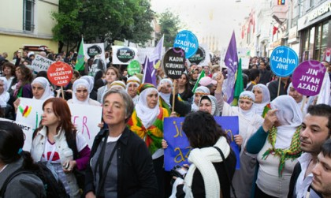

پذيرش > تریبون > گزارش كمپين > زنان دنیا دست در دست هم به سوی ایجاد جهان بهتر / گزارش اول از ایوید 2012


 زنان دنیا دست در دست هم به سوی ایجاد جهان بهتر / گزارش اول از ایوید 2012 زنان دنیا دست در دست هم به سوی ایجاد جهان بهتر / گزارش اول از ایوید 2012
11 اردیبهشت 1391 - گردآوری و ترجمه : ژاله معصومی - نسخه قابل چاپ
تغییر برای برابری: کنفرانس بین المللی ایوید هفته گذشته در استانبول، ترکیه برگزار شد. از سوئد نیز سازمان زن به زن و خبرنگاران تارنمای پرسپکتیو فمینیستی درآن حضور داشتند. تم اصلی کنفرانس «زنان و قدرت اقتصادی» بود. نظامی گری به عنوان یک فعالیت کاپیتالیستی تعریف شده و استراتژی های تغییر در سطوح مختلف مورد بحث قرار گرفت. فوروم آوید با یک مارس متنوع در خیابانهای استانبول به پایان رسید.
داده هایی در مورد فوروم ایوید
دوازدهمین کنفرانس ایوید در تاریخ 19 تا 22 آوریل در استانبول، ترکیه با حضور بیش از 2000 شرکت کننده برگزار شد. آوید اختصارThe Association for Women’s Rights in Development ، یک سازمان بین المللی فمینیستی است جهت تقویت فعالین حقوق زنان، سازمانها، جنبشها که برای حقوق برابر زنان مبارزه می کنند. این فوروم که هر سه و یا چهار سال یکبار برگزار می شود، بزرگترین رویداد دوره ای در نوع خود است که هم کنفرانس و هم خواستگاهی برای کنش گری می باشد.
هفته گذشته بیش از 2000 زن از اقشار و گروههای مختلف و مدافعین حقوق بشر از سراسر جهان در استانبول جمع شدند. شرکت کنندگان چشم انداز فمینیستی، حقوق انسانی زنان، تئوری فمینیستی و کنشگری را مورد بحث قرار می دهند. تم اصلی فوروم هفته گذشته در استانبول "زنان و قدرت اقتصادی" بود. در پایان کنفرانس و بررسی نتایج، اهمیت آنالیز اقتصادی فمینیستی مورد بررسی قرار گرفت. منظور از رشد اقتصادی چیست؟ ریاضت کشی های اقتصادی علایق چه کسانی را دنبال می کند؟ چه کسانی در درجه اول از بحرانهای اقتصادی ضربه می خورند؟
سازمانهای زنان تشویق به سرمایه گذاری در زمینه آموزشهای اقتصادی به زنان و یافتن استراتژیهایی جهت پیدا کردن راه حلهای مشترک که زنان را تقویت می کند، شدند. یکی از سخنرانان گفت "برای اینکه بتوانیم تغییر ایجاد کنیم می بایست اول خودمان را تغییر دهیم، هژمونی قدرت را به چالش بکشیم". سخنران دیگری در سخنرانی پایانی گفت "متحد شویم، ما میبایست در سطح جهانی متحد شویم تا بتوانیم اقتصاد جهانی را در مسیر درست متحول کنیم" .
تمرکز کنفرانس بر سیستمهای اقتصادی توجه زنان زیادی از اتحادیه های کارگری را به فوروم آوید جلب کرد. زنان کارگر در کار خانگی وصنایع خانگی در زمینه اهمیت سازماندهی خویش صحبت کرده و از استثمار اعضایشان توسط بازار و کارفرمایان خصوصی در خانه ها سخن گفتند.
بهای انقلابها
نظامی گری بارها و بارها از طرف سخنرانان و شرکت کنندگان در کنفرانس به عنوان "کسب و کار سرمایه داری" تعریف شده و تهدیدی برای زنان و کودکان. این بحث، بهار عربی و شرایط منطقه منا (کشورهای خاورمیانه و آفریفای شمالی) مورد توجه زیاد از جمله جنگ زدگان آفریقایی و کشورهای خاور میانه و سایر شرکت کنندگان قرار گرفت.
در یکی از بحثهای روزانه سمینارها مسائل زنان منطقه منا(خاورمیانه و شما آفریقا)، آسیب پذیری زنان در دوران گذار و تغییر قدرت، توسط اسماء خادر، فعال حقوق زنان از لیبی بررسی شد. او اشاره کرد که از تلاشهای زنان در مسیر تغییر و انقلاب قدر دانی لازم به عمل نیامده است. زنان زیادی در قیام لیبی مورد تجاوز جنسی قرار گرفتند. تعدادی از این زنان توسط اعضای خانواده هایشان و یا متجاوزین به قتل رسانده شده و مابقی جرات افشاگری را نداشتند. در حالیکه از مردانی که در جریان قیام مجروح شدند با افتخار یاد میشود، به زنان هیچگونه حقی جهت بیان آنچه که به آنها گذشته است داده نمی شود. صبا الحاک، از زنان فعال اپوزیسیون سوریه، در گفتگوی دیگری در فوروم اظهار داشت که دمکراسی در سوریه بدون در نظر گرفتن حقوق برابر زنان ومردان میسر نیست. – شعار ما "هیچگونه دمکراسی بدون حقوق برابر زن ومرد" است. ما می خواهیم که ارزشهای سکولار پایه قوانین در سوریه باشد، قوانینی که حقوق برابر زنان را تضمین می کند. ما خواهان قوانینی هستیم که خشونت علیه زنان در خانواده را جرم قلمداد کند.یکی از تهدیدات بزرگ، قدرت گرفتن احتمالی بنیادگران اسلامی در سوریه است. الحلاک اضافه کرد که بنیادگرایان در حال حاضر به مسایل زنان پرداخته و خواهان تحمیل حجاب، چند همسری برای مردان شده و از زنان به عنوان ناموس خود سخن می گویند. اما جریانات سکولار نیز علیرغم دخالت فعال زنان و بهائی که آنان پرداخته اند به زنان خیانت می کنند. الحلاک گفت " مسائل زنان در اولویت بندی آنان قرار ندارد... احزاب اپوزیسیون حتی حاضر به سازش با افراطیون مذهبی در مورد حقوق زنان هستند".
 زنان بر روی نافرمانی مدنی بعنوان شیوه مبارزه سرمایه گذاری کرده و نارضایتی خود را با خشونت نشان می دهند. ما در صدد تقویت حقوق زنان در مبارزه برای آزادی در یک چارچوب سکولار بعنوان بخشی ازعدالت اجتماعی هستیم. زنان بر روی نافرمانی مدنی بعنوان شیوه مبارزه سرمایه گذاری کرده و نارضایتی خود را با خشونت نشان می دهند. ما در صدد تقویت حقوق زنان در مبارزه برای آزادی در یک چارچوب سکولار بعنوان بخشی ازعدالت اجتماعی هستیم.
در جریان کنفرانس تعدادی از زنان مصری و تونسی از خطر حاد اسلام سیاسی درائتلاف با حکومت نظامیان در مصر و رژیم قبلی در تونس سخن گفتند. حمایت نظامی گران از مسلمانان افراطی در جهت کسب قدرت، نگرانی انقلابیون و فعالین حقوق زنان در مصر را برانگیخته است. اکتیویست جوان امل عبدلاهادی از بنیاد جدید زنان توضیح داد که چگونه فعالین جنبش زنان به عنوان پیروان مبارک جلوه داده می شوند. – چالشها در مصر فمینیستی شده اند. ما می خواهیم که جنبش های خودجوش و احزاب سیاسی مانع آن شوند که بنیادگران اسلامی قوانین کشوررا به نفع خویش تفسیر کنند... انقلاب درهای زیادی را برای زنان گشود، آنان را به عرصه سیاسی کشاند و آنان در این عرصه خواهند ماند تا برای حقوق خود مبارزه کنند.

یانار محمد از زنان فعال عراقی در سمینار دیگری از به قتل رساندن 200 همجنسگرا در درعراق خبر داد. او معتقد است که گروههای مسلح مذهبی به عنوان گروههای شکنجه گر بنیادگرایان در عراق عمل کرده و رژیم حاضر نیز بر روی آن چشم می بندد.
جنگ یک فعالیت اقتصادی جهانی است. کاپیتالیسم، نظامی گری و درگیری های نظامی دست در دست هم دارند. تحریمها نیز یک اقدام غیر انسانی است.
محمد اضافه کرد که – یک میلیون کودک در تحریمها علیه عراق کشته شدند . امروز نیز زنان 20 ساله بدلیل عواقب اقتصادی و اجتماعی تحریمها در آن زمان، سواد خواندن و نوشتن ندارند. چه کسی از تحریمها سود می برد؟ البته که مردم هیچ سودی از آن نمی برند.
ملاقات زنان فعال پر استرس
در کنار گفتگوهای اقتصادی، نظامی، بنیادگرایی مذهبی، بهار عربی، مسائل کردها وفلسطینی ها، حقوق روسپی گران، سازماندهی کارگران کارهای خانگی، شرایط فمینیست های جوان، زنان در مناطق جنگی، اهمیت هنر در مبارزات زنان، شرایط معلولین... کارگاه های مختلف در جریان بود.
متن ”Transforming the revoltuion” در یکی از کارگاهها، توجه بسیاری را جلب کرد. خیلی ها فکر می کردند که صحبت از انقلابات اجتماعی است. اما بزودی مشخص شد که صحبت از انقلاب دیگری ست، تعدادی به سوی سمینارهای دیگر در شتاب بودند اما بسیاری نیز در آنجا ایستادند. این کارگاه در مورد خود فعالین حقوق زنان بود، در مورد سلامتی شان. یکی از شرکت کنندگان با خنده گفت "وقت گذاشتن برای خودم و رسیدگی برای خودم برای من یک انقلاب است". گفتگوها نشان داد که شرایط کاری فعالین زنان با امکانات محدود بسیار سخت است.

لینا ابی رافح زن فلسطینی که در لبنان به کار اشتغال دارد گفت – من در واقع هیچ زندگی برای خودم ندارم، وقت دیدار با دوستانم را ندارم. مدام با 50 درصد از انرژی ام کار می کنم و من فقط 38 سال سن دارم.
سمینه نظیرزنی از پاکستان ادامه داد" من هم همینطور، علیرغم اینکه من خانواده هم دارم. همسرم دو بار مرا ترک کرد! من رییس یک سازمان زنان هستم. من برای ادامه حیات این سازمان در شکار پول هستم. من میبایست همزمان به بودجه این سازمان با در نظر گرفتن تهدید طالبان و پلیس امنیتی فکر کنم. من و خانواده ام در تهدید دائمی بسر می بریم . حالم خوب نیست، وزنم و میزان چربی خونم بالا رفته است بدلیل اینکه نمی توانم به دلایل امنیتی پیاده به سر کارم بروم. من می بایست بطورمداوم با اتومبیل جابجا شوم. در اثر استرس دچار فراموشی شده ام.
گروه به این نتیجه رسید که فعالین حقوق زنان می بایست برای حمایت از زنان درمعرض خطر و آسیب دیدگی، به سلامتی خود اولویت دهند.
یکی ازسمینارهای سازمان «زن به زن»، از سوئد، به امنیت زنان اکتیویست اختصاص داشت که مورد توجه زیادی قرار گرفت. لیسا از عراق گفت که او همواره نگران فرزندانش است. – من هم آکتیویست و هم مسیحی هستم و این منجر به تهدید مداوم من به عنوان رئیس سازمان زنان آسیب دیده در عراق می شود.
زنان در خیابانها
پس از چهار روز فشرده بحث و گفتگوی 2500 زن، همگی با هم به خیابانهای استانبول رفتند تا قدرت و همبستگی خویش را نشان دهند. مردم استانبول از حضور این همه زن در خیابانهای خود که از دور و نزدیک گرد آمده بودند و دست در دست هم، می رقصیدند، می خواندند و حقوق خویش را فریاد می زدند،غافلگیر شدند.بسیاری دست می زدند و تعدادی نیز عکس می گرفتند. آنانی که از خیابانهای استانبول در این روز آفتابی رد شدند زنان خوشحال، مصمم، و شجاعی را که خیابانهای استانبول را به اشغال خود در آورده و کردی می رقصیدند، به فرانسه می خواندند، به ژاپنی شعار می دادند، و پلاکادهای فارسی، عربی و انگلیسی را حمل می کردند، به یاد خواهند آورد. زنانی که از خیابانهای آنان گذر کردند به سوی تغییر جهان در حرکت بودند، جهانی بهتر.
منابع:
http://feministisktperspektiv.se/
http://kvinnatillkvinna.se/kvinnor-relser-m-ttes-i-istanbul
عکس از زن به زن
ارسال به
بالاترین
،
توییتر
،
فریندفید
،
فیسبوک
در همين بخش :
 دهمین دورۀ مراسم تندیس صدیقه دولت آبادی ۱۳۹۲ دهمین دورۀ مراسم تندیس صدیقه دولت آبادی ۱۳۹۲
کارت پستالهایی به بهانهی هشت مارس و به یاد همهی مبارزین راه برابری
بیانیه بیش از 350 تن از مدافعان حقوق زنان به مناسبت روز جهانی زن؛ زنان هر روز فرودستتر میشوند
لباسی که برای تن ما دوخته اند! /اعظم بهرامی
چالشها و چشمانداز فعالیت مدنی زنان
ديگر بخش ها :
طرح یک میلیون امضا
|
مقالات
|
سایت نوشته ها
|
اخبار
|
گزارش كمپين
|
گفت و گو
|
علیه سکوت
|
كوچه به كوچه
|
نامه های شما
|
گزارش ویژه
|
گفتگو با اعضا
|
ویژه سالگرد کمپین
|
تصویر برابری
|
دل آرام علی
|
تریبون
|
مقالات
|
تاریخ شفاهی
|
خارج از چارچوب
|
کتابخانه
|
درباره کمپین
|
کمپین در شهرها
|
کمپین در بند
|
صدای تغییر
|
ویژه 22 خرداد
|
لایحه حمایت از خانواده
|
گالری
|
عشا مومنی
|
امیر یعقوبعلی
|
خدیجه مقدم
|
راحله عسگری زاده و نسیم خسروی
|
پروین اردلان،جلوه جواهری، مریم حسین خواه، ناهید کشاورز
|
زینب پیغمبرزاده
|
سعیده امین، سارا ایمانیان، محبوبه حسین زاده، ناهید کشاورز و همایون نامی
|
احترام شادفر
|
نسیم سرابندی زاده،فاطمه دهدشتی
|
وبلاگ مهمان
|
پرونده خرم آباد
|
دستگیری ها
|
مریم مالک
|
پرستو اللهیاری
|
مهرنوش اعتمادی
|
سمیه رشیدی
|
Other Languages
|
همراهان
|
«فراخوان کمپین ده روز با بهاره هدایت»
| English
|